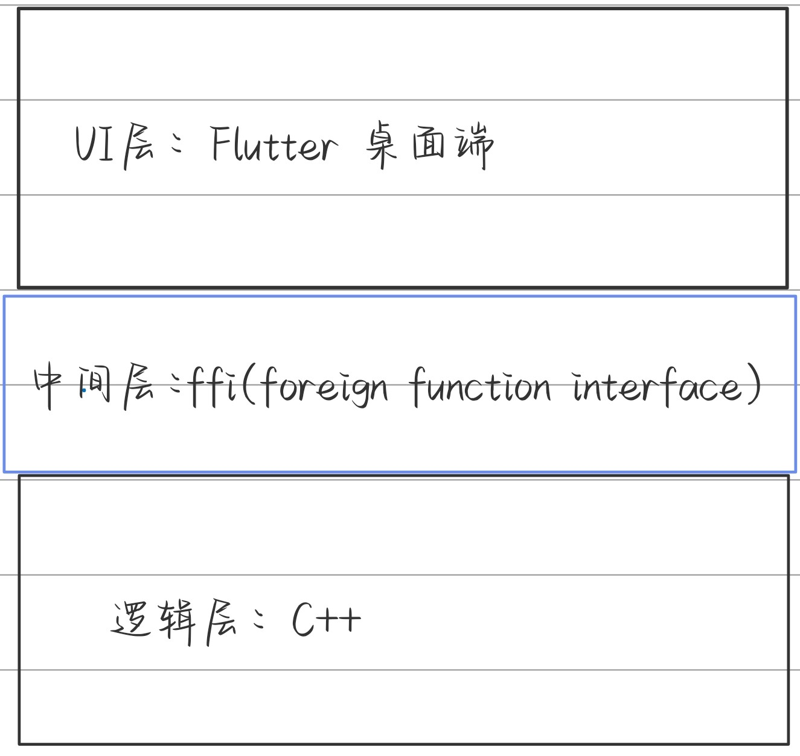

数据结构课设:霍夫曼编码译码
前言
单纯对这类题目比较感兴趣吧，因为要是单纯去实现最原始的霍夫曼算法的话，其实很简单的，但是很多时候正是我们的不知足心理推动了技术的发展与进步，而我也恰恰觉得现阶段霍夫曼算法还有可以优化的地方而变得更加高效，也希望能借这个机会给下学期的算法课开个好头。
题目
问题描述
利用哈夫曼编码进行信息通信可以大大提高信道利用率，缩短信息传输时间，降低传输成本。但是，这要求在发送端通过一个编码系统对待传数据预先编码；在接收端将传来的数据进行译码（复原）。对于双工信道（即可以双向传输信息的信道），每端都需要一个完整的编/译码系统。试为这样的信息收发站写一个哈夫曼码的编译码系统。
基本要求
一个完整的系统应具有以下功能：
（1）I：初始化（Initialization）。从终端读入字符集大小n及n个字符和m个权值，建立哈夫曼树，并将它存于文件hfmtree中。
（2）C：编码（Coding）。利用已建好的哈夫曼树（如不在内存，则从文件hfmtree中读入），对文件tobetrans中的正文进行编码，然后将结果存入文件codefile中。
（3）D：解码（Decoding）。利用已建好的哈夫曼树将文件codefile中的代码进行译码，结果存入文件textfile中。
（4）P：打印代码文件（Print）。将文件codefile以紧凑格式显示在终端上，每行50个代码。同时，将此字符形式的编码文件写入文件codeprint中。
（5）T：打印哈夫曼树（Tree printing）。将已在内存中的哈夫曼树以直观的方式（树或凹入表形式）显示在终端上，同时将此字符形式的哈夫曼树写入文件treeprint中。
初期设计

文献分析
第一篇
一种空间更优的快速霍夫曼解码算法：
[1]. Chen, H.C., Y.L. Wang and Y.F. Lan, A memory-efficient and fast Huffman decoding algorithm. INFORMATION PROCESSING LETTERS, 1999. 69(3): p. 119-122.
以这棵霍夫曼树为例：
一些定义
各叶子节点从左至右用 表示（共有n个编码元素）
level表示节点所在,级数，根节点级数为0，用 表示
height表示二叉树高度，即霍夫曼树中level的最大值，用 表示
编码元素的weight用 表示（注意这个跟题干里的元素权重或者出现频率是不一样的），
定义 ，(其实这个是不必要的)
那么对于一棵霍夫曼树，我们就可以得到它的的对应的值的表，以上面的霍夫曼树为例：
用三个数组存储相应元素
第一种算法
伪代码（算法逻辑）
那么，在对霍夫曼编码进行解码的时候，我们就希望在尽可能短的时间内通过编码获取到对应的元素，算法伪代码如下：
-
Step1：计算 ，其中是二进制数 的位数，式中的 换算成十进制参与计算
-
Step2：在的数组中搜索：
- 若没有相应的与 相等，则 不是一个编码
- 若存在，假设
-
Step3：如果 ，则 不是一个编码，否则 对应的编码元素就是 （相当于找到了元素存储的下标 ）
举例
（直接用原文的例子吧，很好理解）
原理
假设有高为 的满二叉树（霍夫曼树），则有个节点（注意这里对的定义其实与课程中讲的并不一样）、个叶子。不妨设各叶子（编码元素）为 ，那么 ，。
那么，对于给定的二进制编码 ， 对应的十进制就是对应的 的下标值。
假设高为 的霍夫曼树 不为满二叉树，则级数为 的 的 ，也就是当 是对应的高为 的满二叉树时，该节点作为内部节点的子树的叶子的数量。
在搜索 对应的编码元素时，若 的位数小于 ，则追加足够的1来获得长度为 的二进制串 （其实就相当于补成满二叉树的情况），那么，定义 对应的weight 为 ，则 或 。
显然，若 不在 的数列中，则 一定不是一个元素的二进制编码。若在，但由于我们追加了足够的1去获取长度为 的二进制串，则可能存在多个二进制串对应值为 的weight，所以需要第三步的检验。
复杂度
显然时间复杂度是，相较于使用优先级队列或直接使用队列的有较大提升。
占用的空间则为 ，用于存储三个数列及树的高度 。但是其实至少可以优化到 ，因为 ，所以存储 的数列是不必要的。
第二种算法（改进的算法）
现在的空间占用已经压缩到了 ，我们希望进一步压缩 的占用空间。
令 。若 为奇数，
令 ，且 。
此外，定义一个新变量 ，若 ，则令 ，否则，即 时， 。
由于我们能够通过 数列获取（计算出），所以不必存储 。
伪代码
输入： 的数列、树的高度 以及二进制编码 。
输出： 对应的编码元素
过程：
- Step1：计算 ，其中是二进制数 的位数，式中的 换算成十进制参与计算
- Step2：找到 ，使得 。
- Step3：计算 。
- Step4：分解 为 ，使得 对于非负整数 ，不失整体性地假设
- 该分解可以如下进行：判断 是否等于 ，若不相等，那么 ， 。否则，
- Step5：用 计算出 相应的
weight- 其实应当注意到，对应，。
- 对应地易解以及（也就是 的形式）
- Step6：若 且 ，那么 对应的编码元素就是 。令 ，并终止算法。
- Step7：若 且 ，令 ，并终止算法。都不满足，则 不是一个编码。
举例
还是以上面的霍夫曼树为例
- 。
- 第一步， 。
- 第二步，，。
- 第三步，。
- 第四步，。
- 第五步，
- 第六步，，，则 对应的编码元素是
原理其实是跟上面的算法一样的，只不过这里没有存储并且将进行了两两归并。
复杂度
时间复杂度仍为 。
空间复杂度，数列 以及树的高度 的空间复杂度分别为 ，总共的空间复杂度就是这四项的和。
即：
第二篇
[1]胡丽莹,林鹭.一种基于多级查找表的高效Huffman编码算法[J].数学杂志,2012,32(04):753-760.DOI:10.13548/j.sxzz.2012.04.028.
文中扩展霍夫曼树和分级存储的思想对我的霍夫曼树的存储方式有较大启发。
该文中通过对树进行分级并定义偏移量来提高传统查找表的数据存储效率，但实际上原文中构建多重查找表的过程中使用的仍然是一个时间复杂度 的算法（更严格的说是近似 的算法， 为树的高度。这就导致虽然在空间复杂度上实现了优化，但也付出了一定的时间复杂度的代价，是一种以时间换空间的方法。
但其实在霍夫曼树中，真正有效的数据其实就是叶子元素及他们的位置。所以完全可以通过将树补满后记录各个叶子节点的位置和内容，在恢复霍夫曼树时通过叶子节点自底向上完成构建。
第三篇
[1]彭文艺.自适应Huffman编码算法分析及研究[J].价值工程,2012,31(35):196-198.DOI:10.14018/j.cnki.cn13-1085/n.2012.35.115.
这篇文献关注的是课程设计的初始化和编码两个功能。
Huffman编码算法进行编码时，必须进行两次扫描，第一次扫描统计字符出现的概率（权重），并据此进行构造Huffman树；第二次扫描是按Huffman树的字符进行编码。
虽然题目中给出的条件允许输入各节点的权值，但在实际应用过程中是不现实的。
而自定义哈夫曼编码，预先不知道各种符号的出现频率，编码树的初始状态只包含一个叶节点，即NYT（Not Yet Transmitted），NYT是一个逸出码，不同于任何一个将要传送的符号，当一个尚未包含在编码树中的符号需要被编码时，首先输出NYT的编码，然后跟着符号的原始表达。当解码器解出一个NYT之后，它就知道下面的内容暂时不再是Huffman编码，而是一个从未在编码数据流中出现过的原始符号。当插入一个符号q时，会出现两种情况：
- q是第一次出现的字符结点。构造一个新的子树，子树包含NYT符号和新符号两个叶节点，如下图所示。然后判断该子树的父节点是否是是当前权重下编号最大的结点，如果是，直接更新权重即可；否则，将父节点与相同权重的编号最高的结点交换，再更新权重值。
- q不是第一次出现的字符结点。如果q所在节点，是当前节点权重下编号最大的结点，则直接使其当前节点权重及父节点权重加1即可。否则，将当前节点与相同权重的编号最高的结点交换，再更新权重值。
通过这种方式可以在进行编码的同时构建霍夫曼树，提升程序运行效率。
第四篇
[1]李伟生, 李域, 王涛. 一种不用建造Huffman树的高效Huffman编码算法[J]. 中国图象图形学报, 2005, 10(3):382-387.
由于题目中明确要求构建霍夫曼树且该文算法其实是一个 的算法，也是以时间换空间的算法，故未采用，但其原理确实有趣。
综合开发
编码后，每四位转换成一个16进制，但可能存在末尾不足四位的情况，用第一个数字（0,1,2,3）直接记录最后末尾的位数